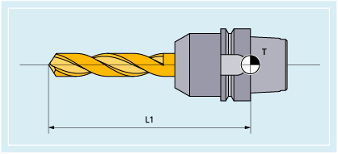

Innerhalb der Werkzeuggruppe "Bohrer" gibt es folgende Werkzeugtypen:
Nr. | Werkzeugtyp |
|---|---|
200 | Spiralbohrer |
205 | Vollbohrer |
210 | Bohrstange |
220 | Zentrierbohrer |
230 | Spitzsenker |
231 | Flachsenker |
240 | Gewindebohrer Regelgewinde |
241 | Gewindebohrer Feingewinde |
242 | Gewindebohrer Withworthgewinde |
250 | Reibahle |
Die folgende Abbildung gibt einen Überblick, welche Werkzeugparameter bei Bohrern in den Korrekturspeicher eingetragen werden:
T | Werkzeugträgerbezugspunkt |
L1 | Länge 1 |
Werkzeugparameter | Bedeutung |
|---|---|
$TC_DP1 | Werkzeugtyp |
$TC_DP3 | Geometrie - Länge 1 |
| |
Siehe auch:
Übersicht